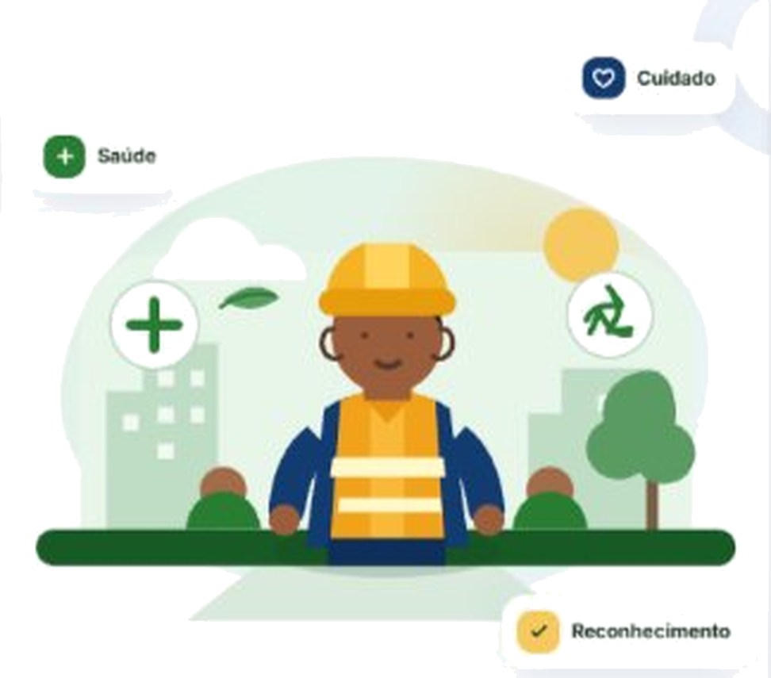

Conectando quem cuida da cidade
Saúde, cuidado e reconhecimento para quem faz a diferença todos os dias.

É simples, rápido e feito para você.
Acesso ao ELO
Bem-vindo(a) ao ELO!
Escolha o seu perfil para personalizar sua experiência:
Sou Morador(a)
Quero cuidar do meu bairro, aprender e apoiar os trabalhadores.
Sou Trabalhador(a)
Faço parte da coleta e quero cuidar da minha saúde, aprender e me conectar.
Concessionária / Prefeitura (Web)
Painel de gestão ocupacional (SST), mapa de riscos e indicadores ESG.
Meu Bem-Estar
Check-in emocional e de saúde
Minha Saúde
Alongamentos, relaxamento e prevenção
Aprender
Vídeos, lições e segurança
Meus ELOs
Seus créditos e recompensas
Mapa da Rota 14 (Ao Vivo)
Veja alertas de vidro quebrado e pontos de apoio na rua
Minha Comunidade
Mensagens de carinho do bairro e da sua família
Meu Progresso & Perfil
Carlos Silva
carlos@elo.com
Rota 14 - Bairro Ipiranga🎟️ Suas Recompensas Ativas:
Meu Bem-Estar
Dica de hoje para a equipe:
Que tal fazer um alongamento rápido de 3 minutos para aliviar as costas?
Minha Saúde
Alongamento para Costas e Ombros
Alivia a tensão de carregar peso • 5 min
⭐ +10 ELOsRelaxamento de Pernas e Panturrilhas
Para quem correu atrás do caminhão • 4 min
⭐ +10 ELOsPostura Correta ao Levantar Peso
Dobre os joelhos, não a coluna • 3 min
⭐ +10 ELOsRespiração e Descompressão Mental
Acalma batimentos e alivia estresse • 3 min
⭐ +10 ELOsVídeo de Alongamento
Alongamento para Costas e Ombros
Equipe de Saúde São Camilo • 5 minutos
Como fazer o movimento correto:
- Fique em pé com os pés afastados na largura dos ombros.
- Puxe o braço direito na frente do peito com a mão esquerda.
- Mantenha as costas retas e o ombro relaxado por 20 segundos.
- Troque de braço e repita respirando suavemente.
Meus ELOs
Continue participando para conquistar mais benefícios!
Como conquistar mais ELOs na Rota:
Troque seus ELOs por benefícios:
Café com Pão na Chapa
Padaria parceira da sua rota de coleta
Recarga de Celular R$ 15
Créditos para Claro, Vivo ou TIM
Sessão de Fisioterapia
Clínica São Camilo para alívio da coluna
Acolhimento Psicológico
Conversa sigilosa com profissional de saúde
Minha Comunidade
Meu Bairro
Coleta, horários e pontos de descarte
Denúncias
Reporte lixo acumulado e caco de vidro
Aprenda
Saúde, riscos e descarte correto
Valorize
Envie mensagens de agradecimento
Caminhão da Coleta a caminho!
Previsão na Rua dos Patriotas: Hoje às 19:30 (Coleta Orgânica).
Denúncias e Riscos
Toque para tirar foto do lixo
Mapa do Bairro (Ao Vivo)
Caminhão Compactador • Equipe Carlos
Percorrendo o circuito Ipiranga (Av. Nazaré, Rua dos Patriotas e Rua Silva Bueno). Velocidade média: 18 km/h.
📍 Pontos Monitorados no Bairro (Toque para ver no mapa):
📅 Calendário Oficial (Subprefeitura Ipiranga):
- Segunda, Quarta e Sexta: Coleta Domiciliar às 19:30
- Terça e Quinta: Coleta Seletiva Reciclável às 10:00
- Ponto de Apoio ao Coletor: Clínica São Camilo (Av. Nazaré, 1501)
Aprender e Prevenir
Doenças causadas pelo descarte incorreto
Dengue, Zika e Chikungunya
Recipientes abertos no lixo acumulam água e multiplicam o mosquito Aedes aegypti.
Leptospirose e Roedores
Restos de alimentos em sacos frágeis atraem ratos e contaminam calçadas e águas de chuva.
Tétano, Hepatites e Cortes Graves
Cacos de vidro, latas e agulhas soltas perfuram o saco e ferem diretamente os garis.
Formas corretas de descarte em casa
Vidros Quebrados, Copos e Lâmpadas
Embale sempre em caixa de leite, papelão grosso ou garrafa PET antes de pôr no saco.
Separação: Orgânico (Úmido) x Reciclável (Seco)
Passe uma água rápida nas embalagens recicláveis para evitar mau cheiro e insetos.
Óleo de Cozinha, Pilhas e Remédios
Resíduos químicos e hospitalares contaminam a água e o solo se forem para o aterro.
Valorize Quem Cuida
Reconhecimento transforma o dia!
Os coletores correm quilômetros cuidando da nossa saúde pública. Deixe um recado de incentivo que será lido para a equipe da rota.
🏥 Monitoramento Clínico & Psicossocial (São Camilo)
Dados Anonimizados (LGPD)Distribuição do Check-in Emocional (Últimos 7 dias)
Mapeamento de Desconforto Físico Pós-Turno
Rota 14 (Ipiranga): 2 coletores relataram dores moderadas na lombar após turno chuvoso. Alongamento focado de 5 min enviado automaticamente aos aparelhos e 1 vaga de fisioterapia preventiva liberada via ELOs.
📍 Ocorrências e Riscos na Via (Supabase Tempo Real)
Integração Cidadão ➔ Frota| Protocolo | Localização | Tipo / Risco | Status | Ação |
|---|---|---|---|---|
| ELO-849201 | Rua Silva Bueno, 310 | ⚠️ Vidro Quebrado | Em análise | |
| ELO-731940 | Rua dos Patriotas, 482 | 🗑️ Lixo Acumulado | Em atendimento | |
| ELO-610422 | Av. Nazaré, 1020 | ⚠️ Descarte Cortante | Resolvida | ✔ Protegido |